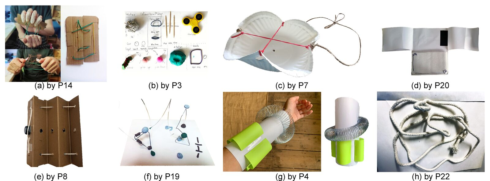

Squeeze, Twist, Stretch: Exploring Deformable Digital Musical Interfaces Design Through Non-Functional Prototypes
Abstract
Deformable interfaces are an emerging area of Human-Computer Interaction (HCI) research that offers nuanced and responsive physical interaction with digital technologies. They are well suited to creative and expressive forms of HCI such as Digital Musical Interfaces (DMIs). However, research on the design of deformable DMIs is limited. This paper explores the role that deformable interfaces might play in DMI design. We conducted an online study with 23 DMI designers in which they were invited to create non-functional deformable DMIs together. Our results suggest forms of gestural input and sound mappings that deformable interfaces intuitively lend themselves to for DMI design. From our results, we highlight four styles of DMI that deformable interfaces might be most suited to, and suggest the kinds of experience that deformable DMIs might be most compelling for musicians and audiences. We discuss how DMI designers explore deformable materials and gestures input and the role of unexpected affordances in the design process.
Author Keywords
deformable interfaces, digital musical instruments, musical gesture, NIME, design practice, non-functional prototyping
CCS Concepts
•Human-centered computing → Interaction design; Interaction design process and methods; Interface design prototyping; •Human-centered computing → Interaction design; Interaction design theory, concepts and paradigms;
Introduction
Human-Computer Interaction (HCI) research has moved beyond concerns of rigid interaction devices to explore deformable materials and interfaces [1][2][3][4]. These deformable interfaces offer new opportunities for Digital Musical Interfaces (DMIs) design [5][6][7]. For example, an advantage of using deformable interfaces for DMIs is that deformable materials have a guiding effect on their use, making them intuitive and easy to learn [8][9][10]. However, the nascent nature of deformable DMI design practice makes it unclear how DMI designers design with deformable materials and how deformable material properties might influence DMI design practice. Furthermore, as there is no established design practice for deformable DMIs, it can be challenging to design the mappings between gesture input and sound output [6]. In this paper, we take a step back from deformable DMI implementation to reflect on deformable DMI design and ask How might musicians design digital musical interfaces with deformable materials? To explore this question, we present a design exploration workshop. We let musicians explore the potential of deformable materials and deformable input in DMI design and reflect on their design explorations. This paper aims to contribute to: 1) A set of potential gesture mappings found in the deformable DMI design exploration workshop; 2) A description of the kinds of deformable DMI that emerge from the design exploration; 3) Suggestions for the role that deformable interfaces might play in DMI design and use.
The rest of this paper is organized as follows. First, deformable interfaces in DMI design and HCI are introduced. Then we present our design exploration workshop approach and the analysis of workshop outcomes. Finally, we discuss our findings and conclude the paper.
Background
Deformable Interfaces in Music
Deformable interfaces use “dynamic changes in a device’s physical shape for input and output” and offer new opportunities for HCI research [5][11][12]. Such interfaces offer hand-based, body-based, and multidimensional deformable input opportunities [7][13], using “dynamic changes in a device’s physical shape for input and output” [11].
Digital Musical Instruments (DMIs) have been identified as one of the most creative and expressive forms of Human-Computer Interaction (HCI) [14][15], and DMI designers and researchers have explored the use of deformable materials in musical instruments and interfaces [1][16][17][18][20][20]. Typically, deformable interfaces for music are used to control sound parameters, such as speed, pitch, and note duration [5]. For example, NoiseBear allows non-musicians and musicians to easily control various sounds by simple squeeze interaction [20]. Similarly, interfaces such as Zstretch demonstrate that stretchable controllers could be used to manipulate volume, pitch, and speed [17]. This design of mappings between deformable input and sound output is becoming a mainstream topic for both DMI designers and researchers [5][6].
As well as experimenting with the design of sound mappings, existing research has explored the design of deformable musical interfaces for different music activities. For example, Troiano et al. investigate the use of deformable interfaces for performing music which highlights the “usefulness of deformable interfaces in the musical context” [5]. Researchers have also shown that deformable musical interfaces can create “playful, visceral, and exploratory music experiences”, which have the potential for the public to have an exploratory music experience instead of designing for musicians only [1][19][22]. Whilst the research outlined above has explored deformable interfaces in mappings design and different musical activities, there is little current research on how deformable materials might inspire DMI design itself.
Materiality in Design Research
The form and materiality (i.e. shape, colour, texture) of an interface plays an increasingly significant role in HCI research as attention is directed to the aesthetic dimension of interaction [22][24]. Form is the “visual, physical, or temporal manifestation and/or configuration of a design” [25]. Form and materiality are inseparable for an object; therefore researchers consider form from three perspectives: material, meaning, and making [25]. Indeed, the materiality of an artefact has been identified as a significant part of HCI design in terms of its tactile and embodied presence [25][27][28][29].
One approach to investigating materiality is through workshop methods, which have had a long and critical role in HCI research, allowing researchers to explore the creativity and new ideas of participants [30][31]. For example, Wilde et al. used workshops to explore the relations between embodiment, materiality and performativity [32], Bjelland and Tangeland used the structured approach to explore prototyping haptic user interfaces in the early design stages [33], and Ratto reconfigured materials, users, and prototyping as critical making [34]. Andersen argues that material experimentation is an “under-described factor” in recent HCI research and that material improvisation in their workshop approach could shift designers’ attention from design results to the design process and to focus on reflections on the material [30].
Exploring Design
One challenge for exploring deformable interface design is that there are currently many technical barriers to overcome when implementing deformable interfaces, which distract from an open and exploratory design process, such as finding robust sensors and materials [18][19][35][20][36]. To be freed from such technical constraints, designers need to explore deformable interfaces in open-ended design contexts [37].
Open-ended design thinking can help designers create artefacts without implementation constraints and let their imagination run free, offering a novel and rich creative practice for designers [38][39][40]. Open-ended design approaches have been applied in material exploration research and musical instrument design research. For example, Lepri and McPherson [40] presented design value discovery through a hands-on design activity with open-ended design in communities of musical practice. Nordmoen et al. [41] explored the craft practice of designers exploring unfamiliar and ambiguous sensor material with an open-ended design context. Their exploration indicates that the approach of material improvisation in open-ended design contexts inspired designers to use craft as a way of thinking through material [30][41][43].
Research Questions
In light of the potential for deformable interfaces in DMI design highlighted above we explore the following research questions (RQs) in this paper:
RQ1: What mappings might DMI designers make between deformable input and sound output?
RQ2: What kinds of DMIs do deformable materials inspire in an open-ended design context?
RQ3: What uses of DMIs might be more suited to deformable materials?
Design Exploration Workshop
We developed an open-ended design thinking workshop building on Andersen’s Magic Machine Workshop [30] to explore our research questions. Our workshop focuses specifically on how DMI designers think of deformable materials and deformable input in musical contexts without technical constraints -- designers were invited to make non-functional prototypes with deformable inputs. Our motivation for taking this approach was to explore subjective design experiences through the process of making and also to liberate participants (the DMI designers) from technological concerns and limitations and allow them to ask themselves ‘why’ instead of ‘how’ to design DMI with deformable inputs [30][40].
The workshop took place in the UK during a period of lockdown in which in-person social interaction was heavily restricted, therefore we structured our workshop to take place remotely. Participants took part in their own homes and connected using video-conferencing software. Before the workshop started, participants completed a questionnaire about their background and experience in DMI design. Then participants signed a consent form and were informed that they could drop out at any time, and that the institution's ethics policies were followed. The overall duration of the workshop was around 60 minutes.
Participants
Twenty-three musicians (17 male, 6 female) were recruited by academic mailing lists (NIME community: community@nime.org) and social networks. Based on the questionnaire results, all participants had experience either in playing an acoustic instrument or recording/producing music. Participants’ experience in designing DMI ranged from novice designers to experienced designers. 4/23 of the participants did not have detailed knowledge or experience of digital instrument design and were included in the study for their input regarding gestures and materials related to music and musical instruments more broadly. Most of the participants (20/23) had never used deformable input in DMI design before. There were eight workshops on Zoom, with an average of 3 participants per workshop.
Workshop Design
Following Andersen’s methodology in which workshop materials should remain mundane and everyday [30], participants in our workshop were invited to search for everyday objects in their homes. Participants were asked to prepare the materials before the start of the workshop, and they were informed that the key aim of the material searching was to find materials that provide some deformable gestures (i.e. stretch, bend, press, twist, and squeeze). These gesture inputs were selected as Troiano et al. [5] found them to be the gestures most commonly used by musicians with deformable interfaces for performing music.
The task of searching available materials became the first source of insights about participants' assumptions about deformable input, which is different to Andersen's approach [30]. In addition, we invited participants to have an open discussion before the Prompt activity to discuss their general expectations and ideas on the design activity. The six steps of our workshop were:
A brief introduction of the aim and procedure was presented. With participants' permission, the facilitator started video recording.
Ten minutes of open discussion about participants' understanding of the materials they had collected and the design activity.
Participants were then provided with Prompt Activities: connect words and drawings to deformable input gestures, including bend, press, stretch, twist, and squeeze.
The participants were then asked to use their available materials to build imagined instrument(s).
Once the group finished building the prototypes, each participant was invited to ‘play’ their instrument(s) and explain or mock their imagined sound.
Then, each presentation was discussed within the group.
Data Collection and Analysis
The workshop sessions were audio and video recorded and transcribed to facilitate thematic analysis. The data analysis included the analysis of design outputs, transcriptions of the group discussion, and observations during the study. We followed the guidance of thematic analysis [44] and conducted a data-driven approach to extract participants' ideas about using deformable input. This process was carried out with MAXQDA software.
Findings
In total, 28 prototypes were built - Note that 5 participants built two prototypes and some participants only presented a prototype design concept and did not include the details such as the mapping design. Table 1 presents examples of prototypes built during the workshop with the construction description, the materials and the input gestures they used, and the manipulation of the prototypes.
The thematic analysis generated around 90 codes and identified six themes from participants' feedback and observation of their design work as described below.
Table 1: Some examples of the prototype built during the workshop
Participant | Construction | Manipulation and Gesture Input | Materials |
|---|---|---|---|
P2 | A MIDI controller that maps the shapes and sound parameters. | Control the sound by changing the shapes of the rubber bands. (stretch, press) | Rubber bands, metal box, clips |
P3 | A tangible synthesizer box that controls sound parameters via some tangible components. | Use a tangible way to control the sound (e.g. squeeze a pink foam to change the pitch). (twist, press, squeeze, touch, stretch) | Clay, tinfoil, foam, paper, rubber band |
P4 | A wearable musical interface that allows people to use two hands to control the sounds. | Wear the interface on the left hand and control it via the right hand (or versa). (stretch) | Paper, spring |
P5 | A “Hand Theremin” allows people to touch and manipulate the material with gestures. | Interact with the material via hand gestures. (squeeze, bend, twist) | Paper plate, fabric, metal wire, clay |
P9 | A harmonica style instrument made in clay straw which allows user to blow into it with two hands manipulation. | People could play with it by pressing the buttons and stretching the twine. (press, stretch) | Clay, twine, straw |
P12 | A spring shaped structure and a fabric covered box as a base. | Controlling the pitch by touching the different areas of the shape and pushing/stretching the handle to create some sound effects. (squeeze, touch, push/stretch) | Foam, clay, metal wire, fabric, twine, paper clips |
P14 | A bendable clarinet which made in a plastic bottle and elastic bands. | Using deformable inputs such as bend and stretch to add sound effects. (twist, press, twist) | Plastic bottle, rubber bands |
Design Inspirations and Processes
Three types of design inspiration for deformable DMIs emerged from our workshop:
Design based on existing instruments (acoustic and digital),
Design based on the material properties, and
Design based on the way of interaction.
For those prototypes designed based on existing instruments (P5, P9, P14), participants explained that they wanted to create different interactions for the existing instrument when they presented where their ideas came from. P3 described the prototype as “a Hand Theremin” , which allows people to control the sound by touching and manipulating the material. P3 also mentioned that the idea came the non-tactile nature of the Theremin, and wanted to design for people who “want to actually touch it”. The second type of instruments (P3, P4, P10, P12) are described as designed based on the material properties since participants connected the properties of the materials to the sound design and interaction method. P3 and P5 described materials such as foam and clay that make people subconsciously want to squeeze and press. P15 mentioned that material such as paper is reminiscent of a crisp and clear sound as the material itself is very light. The third type of instrument was designed for specific interaction. One example is a wearable instrument (P3) which shows a way of playing with two hands, more like one hand is responsible for chords, and the other hand is responsible for melody.
Deformable Input in Musical Context
In selecting the materials, participants revealed glimpses of their initial understanding of deformable input i.e. ‘what kind of materials could provide such deformable input’. From the results, participants not only used soft materials to achieve deformation, but they also used materials such as cardboard to build a physical structure to allow them to stretch and bend (one example in Figure 1 (e)).
Table 2: Mappings between gesture input and sonic/musical response in Prompt Activity (Numbers indicate the number of participants referring to each category)
Sound | Squeeze | Twist | Stretch | Press | Bend |
|---|---|---|---|---|---|
Pitch Control | 5 | 6 | 6 | 2 | 14 |
Timbral Changes | 1 | 2 | 2 | 1 | 1 |
Volume/Amplitude | 5 | 5 | 4 | 3 | - |
Filtering | 2 | 2 | 2 | - | 1 |
Speed/Tempo Changes | - | 1 | 4 | 1 | 1 |
Distortion | - | 2 | 2 | 1 | 1 |
Modulation | - | - | 1 | 1 | 2 |
Panning | - | 1 | - | - | 1 |
Envelope (ADSR) | 1 | - | - | - | - |
Trigger Sound | 3 | - | - | 4 | - |
On/Off | - | - | - | 4 | - |
Percussive Sounds | - | - | - | 3 | - |
Spectral Content | - | - | 1 | - | - |
Dynamics | - | 1 | - | - | - |
Delay | - | 1 | - | - | - |
Reverb | 1 | - | - | - | - |
Far/Close | - | - | 1 | - | - |
Wet Mix | 1 | - | - | - | - |
Tables 2 and 3 present the mappings between deformable input and sound output identified in responses to the prompt and design activities. We found that in the prompt activity participants focused on the gestures whereas in the design activity they also thought about the materials and sound.
In terms of the results of prompt activity (see Table 2), the mapping design is mainly in terms of two aspects. Firstly, the imagination of mappings design emerges from understanding the gesture inputs—considering the meaning of gesture input in the prompt activity inspired participants’ creativity in the design activity. Seven participants (P4, 5, 6, 10, 12, 13, 15) reported that thinking about what those gestures might mean to music inspired them to think about the kind of interfaces they want to build and to think about “what could modify with gesture” (P10). The second aspect of inspiration in the mapping design of Prompt Activity is developing ideas from the existing musical instruments. Four participants (P3, 5, 7, 8) mentioned that the ideas of mappings design came from the gesture input on existing musical instruments they had played or known before.
Table 3: Mappings between gesture input and sonic/musical response in Design Activity
Sound | Squeeze | Twist | Stretch | Press | Bend |
|---|---|---|---|---|---|
Pitch Control | 2 | 3 | 8 | 3 | 4 |
Timbral Changes | 2 | 1 | 2 | 4 | 1 |
Delay/Time Changes | 1 | - | 3 | 2 | 2 |
Sound Effect | 3 | 1 | 2 | - | - |
Volume/Amplitude | - | 2 | - | 1 | 2 |
Distortion | 2 | 2 | - | - | - |
Reverb | - | 1 | 2 | - | - |
Modulation | - | - | 1 | - | - |
Harmonies | - | - | - | - | 1 |
Trigger Sound | - | - | - | 2 | - |
Mute | - | - | - | 1 | - |
Spectrum | - | - | - | - | 1 |
Mix | - | - | 1 | - | - |
Regarding the results from the design activity (see Table 3), most (59/62) of the deformable gesture input (i.e. squeeze, twist, stretch, press, and bend) are designed as continuous feature modulation (e.g. timbre, amplitude or pitch). The changing of sound parameters depended on the amount of force exerted by the users (i.e. the greater the stretching force, the more significant the change in output). The mappings design was suggested to make the musical interaction more “intuitive and understandable” (P3).
Sonic Affordances of Deformable Materials
When participants were invited to explain in words or mock the sounds they imagined, we found that participants’ imagined sonic outcomes came from both an understanding of deformable gestures and also the materials’ affordances. Participants mentioned that the texture and haptic feedback of the material gave them ideas about the sonic response. P4 described this process as “starting mainly from the physical properties of the material”. P21 mentioned that for many instruments, the musician's “ability to manipulate the tone is different just because of the physicality of the instrument”. The different tactile sensations of the materials allowed DMI designers to discover different mapping strategies and sonic responses.
Interaction Styles
We categorised the design prototypes into four types from our analysis of our observations and interviews: hand-held instrument, surface-based instrument, wearable instrument, and hybrid-mode instrument.


Figure 1: A selection of the outcomes from the workshop. From left: (a)(e) Hand-held Instrument, (b)(f) Surface-based Instrument, (c)(g) Wearable Instrument, (d)(h) Hybrid-mode Instrument.
There were 12/28 prototypes identified as hand-held instruments since they were played by two-handed input (e.g. Figure 1 (a)(e)). Participants’ descriptions of these prototypes referred to traditional acoustic instruments, and some unique modulations of deformable input were emphasised. For example, P8 introduced the instrument as “holding like an accordion”.
Some mock-ups (4/28) were designed as surface-based (or table-based) instruments that allow users to interact by shaping, moving, and manipulating different components on it (e.g. Figure 1 (b)(f)). In particular, one type of surface-based instrument can be described as material manipulation of sound parameters (see Figure 1 (b)). One prototype that emerged in our workshop was a “tangible synthesiser desk”(P5), which allows users to control the sound parameters by manipulating materials instead of pressing buttons or moving sliders.
Some prototypes (3/28) are presented as wearable instruments which provided one-handed or two-handed input (e.g. Figure 1 (c)(g)). One type of wearable instrument that emerged in the workshop is head-mounted (see Figure 1 (c)). Two designers wore the prototype as wearing masks and manipulated the prototype with two hands. One designer pointed out that singers could play this artefact by manipulating their voices. Another type is one which could be worn with one hand/arm and interacted with by the movement of the hand/arm with fine control by the other hand (see Figure 1 (g)).
Some prototypes (9/28) were categorised as a hybrid-mode instruments as they were presented to be played flexibly (e.g. Figure 1 (d)(h)). Participants also described this instrument as “no strict method to play” (P17). These kinds of prototypes were mainly designed based on the material itself and so the way of playing them varies with the properties of the materials. For example, controlling sound by folding, crumpling, and placing paperr (see Figure 1 (d)). Although it was argued that this prototype did not include any deformable input, it contributed to a way of thinking that simple materials produce complex actions and results.
“It has a memory because once you fold it and you play a bit with it, it will keep some scratches on it. So, this could also be something interesting, like an instrument with memory.” (P20) (see Figure 1 (d))
Tangible Manipulation of Sound
Designing non-functional prototypes focused DMI designers’ attention on the materials, tangible interaction, deformability, and physical expressiveness. Our data suggests that interaction with materials can also stimulate designers’ imagination. P7 exemplifies this as “playing with the materials because it is also tactile and gestures, that is when you start to imagine possibilities that maybe do not already exist”.
Participants mentioned that direct material manipulation and spatial interaction contributed to their designs. Six participants (P4, 7, 9, 12, 22, 23) mentioned that they came up with the design ideas when they started to “play” with the materials. Eleven participants (P5, 7, 9, 10, 11, 12, 13, 16, 18, 21, 23) considered the interaction and input as their first step in designing such interfaces. Five participants (P3, 7, 10, 18, 21) reported that they designed the sound and the functionality of the interfaces based on haptic manipulation. P21 mentioned that “different tactile sensation” offers a “different ability to manipulate the tone”, similar to acoustic instruments.
We suggest that there were primarily two aspects of physical expressiveness explored in the design workshop from participants’ feedback. The first aspect is the rich expressiveness of the material itself, which allows designers to think about using the material's affordances and constraints, e.g. building a DMI by “reassemble the physical constraints of different ranges” (P20). Another aspect was the variety of gestures that could be imagined. Eight participants (P3, 5, 11, 12, 16, 19, 21, 22) reported that the objects’ materiality inspired them to explore the relationship between different gestures and material properties. For example, “you can squeeze and bend the pitch literally by just like moulding in the clay” (P5).
Music Perception
A theme related to how deformable DMIs might be perceived by musicians and audiences was identified. Six participants (P3, 11, 19, 20, 22, 23) argued that DMIs with deformable input were more suitable for exploratory activities than performing in front of the audience. According to P22, sometimes an instrument’s use in performance is unnecessary if it is “enjoyable to use” and “as expressive in a particular way”. As suggested by P23, one potential challenge of using deformable musical interfaces in performance was that it was “extremely difficult to perceive from the audience”. Five participants (P3, 15, 20, 22, 23) reported that the experience of interacting with deformable interfaces was associated with interacting with the material - when the audience cannot touch the interface, they will not be able to perceive the interaction. P15 noted that the design challenge of using deformable interfaces in DMI might be “how do we make an instrument that is interesting to play with and interesting to listen to”.
It may be that the focus of the workshop led to deformable DMIs which afford an exploratory and playful interaction for musicians, or it may be something about the properties of deformable interfaces themselves. Three participants (P20, 22, 23) suggested that an “instrument created with no intention of performing to an audience” might be one solution, which means “a musical instrument for creating music for the musicians” (P22). For performers, “it feels more of a personal experience and less of a spectator experience” (P23). This result is similar to findings in current literature about the problem of audience understanding and engagement of DMI [45].
Imagined Instruments in Open-ended Design Context
From observations in our study, participants’ design process could be summarised in four phases: (i) the conceptual phase (prompt activity), (ii) the experimenting phase (design activity), (iii) the implementation phase (design activity), and (iv) the performance phase (presentation and demo). The design inspirations emerged in different design phases, and some overlapped within the design process.
Our data indicates that the open-minded design context allows participants to imagine the possibility of interactive gestures and materials properties in a musical context. This design environment helps designers consider different aspects of materiality during the design process. In the ideation phase, understanding material allowed participants to evaluate their design requirements and make the design decision with the available materials (P2, 3, 6, 13, 16, 21, 22). More than half of the participants mentioned that the results had exceeded their expectations; they did not expect they could make any design decisions in such a short time with those unfamiliar materials.
Another aspect is that “without technical constraints”, participants had more freedom to think about the gesture input and interaction (P23). P23 viewed design without any technical constraints as “a great opportunity because it is imaginary”. This design approach was reported to be helpful to get more inspiration with no bound of technical limitations. For example, P5 reported that when she designed without thinking of implementing the prototype, she found she would more focus on “thinking the design of gestures and interaction”. Moreover, design ideas were generated quickly through interacting with materials, which surprised many participants (P2, 3, 4, 5, 6, 7, 8, 13, 15, 16). Five participants (P2, 13, 15, 20, 23) identified themselves as “not a tangible guy”, “usually work digitally”, and “do not build much stuff”, but after the hands-on activity, they reported “something on my adopt in the future”, and “motivated to maybe try to turn this into a real instrument”.
Discussion
Reflecting on our findings, we suggest that participants generated unique design ideas from everyday objects in three ways: i) rethinking the materials in a specific context (music context); ii) exploring design concepts with concrete objectives (making a non-functional DMI and demo); and iii) encountering unexpected affordances during design exploration.
From the results, some participants emphasized their reflections on the interfaces’ materiality and how the material properties connect to their design concepts. In this way, the prompt activity and pre-discussion in this study allowed participants to talk about and re-think the meaning of the materials, which led to the prototype’s interaction design and physical form becoming clearer. This process is similar to the description of material driven design methods in the literature, such as understanding the material, creating materials experience vision, manifesting materials experience patterns, and designing material concepts [46].
We suggest that the time pressure and the concrete objective for demonstration encouraged more focused design output. The limited time forced participants to find materials to fit their ideas quickly and to use the most salient properties of the materials. As reported above, eight participants reported that the objects' materiality inspired them to explore the relationship between different gestures and material properties. For example, P22 mentioned that the “imperfect and complex of the materials” show the “real richness of expression” - such richness of expression comes from the material itself.
The constraints and affordances of materials are a significant guide and influence on interactions [47]. In this study, the unexpected affordances of the material provided a unique design perspective. For example, P15’s design is a bendable piano made of paper. The effect is that the keys are very light as they are made of paper, so people can interact with them by blowing air and even “let it go as a sort of instrument played by the wind”. We found that the uncovering of unexpected affordances occurred in the later stages in the design process - when the initial idea was implemented.
Design Approaches
Reflecting on our results, we identified two main design approaches: i) gesture-guided design; and ii) form-driven design. We noted two forms of gesture-guided design process: (1) designers re-thinking the meaning of deformable gesture input before the hands-on activity, (2) designers focusing on gesture design during the design practice. For the first case, 10 participants noted that the prompt activity was helpful for them to generate ideas of how gesture inputs and sound output could be related. P4 mentioned that “it is a good starting point to think about what possibilities there could be” with those gestures. One example for the second case was P18 who wanted to make a guitar-like interface that allows people to pluck strings made from multiple materials.
In terms of form-driven design, we noticed that some participants focused on physical design or physical qualities during the design process. For example, the hand-held instruments and wearable instruments reported in section (see Figure 1). Such a design process leads to a more “visual” design result, and it is easy for others to understand the designer’s ideas through the appearance. In the presentation after the design activity, participants mainly talked about their pieces’ physical shape and how the physical design connects to the interaction. For example, P8 noted that “I would usually start with the object's physical presence and let that dictate how I would want to interact with it, and what gestures I would use”. Alternatively, in P22's design, the rich expressiveness of the material itself means that the prototype “ends up with such complex shapes”. Such reflection on the form of the design occurred throughout the design process. For example, P7, 8, and 15 mentioned that when they interacted with their pieces for a while, new ideas emerged about the form design. We suggest that this approach is similar to a form-driven design approach widely used in the design domain (i.e. fashion design, architecture design, product design, and graphic design) [22].
Limitations
There are limitations to our work that might affect the results. One limitation of the study design is that participants were not given the same set of materials and tools to experiment with. Although instructions on finding suitable materials were introduced at the beginning of the study, everyone’s understanding of appropriate materials was different. However, as discussed previously, participants’ material selection exemplified their initial understanding of what might be deformable input and the implicit design question of ‘what kind of materials could provide such deformable input’.
The outcomes are based on the analysis of a study with 23 participants who had a variety of DMI design experience. A larger number of participants would be needed for more substantial results. The study was conducted online, and so the data collection of the video recordings was inherently problematic, and there was no opportunity for in-person discussion and interaction. However, such an approach does allow for including participants who might not usually travel to take part in studies in design workshops and universities.
Concluding Remarks
This paper presented a study that explored the design of deformable musical interfaces through non-functional prototype design practice. Participants generated deformable DMI design ideas through rethinking the materials and exploring unexpected affordances within a musical design context. We also observed both gesture-guided and form-driven approaches to designing deformable DMIs. Future research needs to explore how DMI designers might take such design decisions and approaches to the implementation phase. For example, exploring how DMI designers implement the mapping between deformable input and sound output, examining whether design variations depend on the properties of the materials, or even how DMI designers would design the materials themselves.
Acknowledgments
We would like to extend an enormous thanks to all the participants for their precious contribution. This work is supported by the the China Scholarship Council, and the EPSRC and AHRC Centre for Doctoral Training in Media and Arts Technology (EP/L01632X/1).
Ethics Standards
This study was approved by Queen Mary University of London’s Research Ethics Committee on the 4th May 2020 (Reference No: QMREC2414). All participants provided informed consent, and participants received £10 as compensation for their time. There are no observed conflicts of interest in this study.
Appendices
More details on the study design and the data produced in the study are available as an online appendix. Please visit: https://www.jianingzheng.com/exploratorystudy
Citations
- ↩Boem, A., Troiano, G. M., Lepri, G., & Zappi, V. (2020). Non-Rigid Musical Interfaces: Exploring Practices, Takes, and Future Perspective. Proceedings of the 2020 Conference on New Interfaces for Musical Expression, 17–22.
- ↩Rasmussen, M. K., Pedersen, E. W., Petersen, M. G., & Hornbæk, K. (2012). Shape-changing interfaces: a review of the design space and open research questions. Proceedings of the SIGCHI Conference on Human Factors in Computing Systems, 735–744.
- ↩Qamar, I. P., Groh, R., Holman, D., & Roudaut, A. (2018). HCI meets material science: A literature review of morphing materials for the design of shape-changing interfaces. Proceedings of the 2018 CHI Conference on Human Factors in Computing Systems, 1–23.
- ↩Sturdee, M., Everitt, A., Lindley, J., Coulton, P., & Alexander, J. (2019). Visual Methods for the Design of Shape-Changing Interfaces. IFIP Conference on Human-Computer Interaction, 337–358.
- ↩Troiano, G. M., Pedersen, E. W., & Hornbæk, K. (2015). Deformable interfaces for performing music. Proceedings of the 33rd Annual ACM Conference on Human Factors in Computing Systems, 377–386.
- ↩Boem, A., Troiano, G. M., Lepri, G., & Zappi, V. (2020). Non-Rigid Musical Interfaces: Exploring Practices, Takes, and Future Perspective. Proceedings of the 2020 Conference on New Interfaces for Musical Expression, 17–22.
- ↩Boem, A., & Troiano, G. M. (2019). Non-Rigid HCI: A Review of Deformable Interfaces and Input. Proceedings of the 2019 on Designing Interactive Systems Conference, 885–906.
- ↩Morris, G. C., Leitman, S., & Kassianidou, M. (2004). SillyTone squish factory. Proceedings of the 2004 Conference on New Interfaces for Musical Expression, 201–202.
- ↩Marier, M. (2014). Designing Mappings for the Sponge: Towards Spongistic Music. NIME, 525–528.
- ↩Wicaksono, I., & Paradiso, J. A. (2017). Fabrickeyboard: multimodal textile sensate media as an expressive and deformable musical interface. NIME, 17, 348–353.
- ↩Boem, A., Troiano, G. M., Lepri, G., & Zappi, V. (2020). Non-Rigid Musical Interfaces: Exploring Practices, Takes, and Future Perspective. Proceedings of the 2020 Conference on New Interfaces for Musical Expression, 17–22.
- ↩Troiano, G. M., Pedersen, E. W., & Hornbæk, K. (2015). Deformable interfaces for performing music. Proceedings of the 33rd Annual ACM Conference on Human Factors in Computing Systems, 377–386.
- ↩Alexander, J., Roudaut, A., Steimle, J., Hornbæk, K., Bruns Alonso, M., Follmer, S., & Merritt, T. (2018). Grand challenges in shape-changing interface research. Proceedings of the 2018 CHI Conference on Human Factors in Computing Systems, 1–14.
- ↩Wicaksono, I., Rozendo, C., Ye, R., Trapp, J., Bove Jr, V. M., Dagdeviren, C., & Ishii, H. (2018). PerForm: Deformable Interface for Exploring Sound Through Shapes. Extended Abstracts of the 2018 CHI Conference on Human Factors in Computing Systems, 1–6.
- ↩Boem, A., & Troiano, G. M. (2019). Non-Rigid HCI: A Review of Deformable Interfaces and Input. Proceedings of the 2019 on Designing Interactive Systems Conference, 885–906.
- ↩Cheung, V., Eady, A. K., & Girouard, A. (2018). Deformable Controllers: Fabrication and Design to Promote Novel Hand Gestural Interaction Mechanisms. Proceedings of the Twelfth International Conference on Tangible, Embedded, and Embodied Interaction, 732–735. https://doi.org/10.1145/3173225.3173332
- ↩Alexander, J., Roudaut, A., Steimle, J., Hornbæk, K., Bruns Alonso, M., Follmer, S., & Merritt, T. (2018). Grand challenges in shape-changing interface research. Proceedings of the 2018 CHI Conference on Human Factors in Computing Systems, 1–14.
- ↩Medeiros, C. B., & Wanderley, M. M. (2014). A comprehensive review of sensors and instrumentation methods in devices for musical expression. Sensors, 14(8), 13556–13591.
- ↩Wanderley, M. M., & Depalle, P. (2004). Gestural control of sound synthesis. Proceedings of the IEEE, 92(4), 632–644.
- ↩Boem, A., Troiano, G. M., Lepri, G., & Zappi, V. (2020). Non-Rigid Musical Interfaces: Exploring Practices, Takes, and Future Perspective. Proceedings of the 2020 Conference on New Interfaces for Musical Expression, 17–22.
- ↩Singer, E. (2003). Sonic Banana: A Novel Bend-Sensor-Based MIDI Controller. NIME, 220–221.
- ↩Chang, A., & Ishii, H. (2007). Zstretch: a stretchy fabric music controller. Proceedings of the 7th International Conference on New Interfaces for Musical Expression, 46–49.
- ↩Kiefer, C. (2010). A Malleable Interface for Sonic Exploration. NIME, 291–296.
- ↩Grierson, M., & Kiefer, C. (2013). NoiseBear: A wireless malleable instrument designed in participation with disabled children. New Interfaces For Musical Expression, Poster.
- ↩Henriques, T. (2012). SONIK SPRING. Proceedings of the International Conference on New Interfaces for Musical Expression. https://doi.org/10.5281/zenodo.1178283
- ↩Troiano, G. M., Pedersen, E. W., & Hornbæk, K. (2015). Deformable interfaces for performing music. Proceedings of the 33rd Annual ACM Conference on Human Factors in Computing Systems, 377–386.
- ↩Grierson, M., & Kiefer, C. (2013). NoiseBear: A wireless malleable instrument designed in participation with disabled children. New Interfaces For Musical Expression, Poster.
- ↩Chang, A., & Ishii, H. (2007). Zstretch: a stretchy fabric music controller. Proceedings of the 7th International Conference on New Interfaces for Musical Expression, 46–49.
- ↩Troiano, G. M., Pedersen, E. W., & Hornbæk, K. (2015). Deformable interfaces for performing music. Proceedings of the 33rd Annual ACM Conference on Human Factors in Computing Systems, 377–386.
- ↩Boem, A., Troiano, G. M., Lepri, G., & Zappi, V. (2020). Non-Rigid Musical Interfaces: Exploring Practices, Takes, and Future Perspective. Proceedings of the 2020 Conference on New Interfaces for Musical Expression, 17–22.
- ↩Troiano, G. M., Pedersen, E. W., & Hornbæk, K. (2015). Deformable interfaces for performing music. Proceedings of the 33rd Annual ACM Conference on Human Factors in Computing Systems, 377–386.
- ↩Boem, A., Troiano, G. M., Lepri, G., & Zappi, V. (2020). Non-Rigid Musical Interfaces: Exploring Practices, Takes, and Future Perspective. Proceedings of the 2020 Conference on New Interfaces for Musical Expression, 17–22.
- ↩Jensenius, A. R., & Voldsund, A. (2012). The music ball project: Concept, design, development, performance. Proceedings of the 12th International Conference on New Interfaces for Musical Expression, 300–303.
- ↩Uğur Yavuz, S., Veske, P., Scholz, B., Honauer, M., & Kuusk, K. (2021). Design for Playfulness with Interactive Soft Materials: Description Document. Proceedings of the Fifteenth International Conference on Tangible, Embedded, and Embodied Interaction. https://doi.org/10.1145/3430524.3442702
- ↩Jung, H., & Stolterman, E. (2011). Form and materiality in interaction design: a new approach to HCI. In CHI’11 Extended Abstracts on Human Factors in Computing Systems (pp. 399–408). Association for Computing Machinery.
- ↩Gross, S. (2015). Material and Meaning in Tangible Interactions. Proceedings of the Ninth International Conference on Tangible, Embedded, and Embodied Interaction, 453–456. https://doi.org/10.1145/2677199.2691609
- ↩Jung, H., & Stolterman, E. (2012). Digital form and materiality: propositions for a new approach to interaction design research. Proceedings of the 7th Nordic Conference on Human-Computer Interaction: Making Sense Through Design, 645–654.
- ↩Robles, E., & Wiberg, M. (2010). Texturing the" material turn" in interaction design. Proceedings of the Fourth International Conference on Tangible, Embedded, and Embodied Interaction, 137–144.
- ↩Robles, E., & Wiberg, M. (2010). Texturing the" material turn" in interaction design. Proceedings of the Fourth International Conference on Tangible, Embedded, and Embodied Interaction, 137–144.
- ↩Jung, H., Wiltse, H., Wiberg, M., & Stolterman, E. (2017). Metaphors, materialities, and affordances: Hybrid morphologies in the design of interactive artifacts. Design Studies, 53, 24–46.
- ↩Ishii, H., & Ullmer, B. (1997). Tangible bits: towards seamless interfaces between people, bits and atoms. Proceedings of the ACM SIGCHI Conference on Human Factors in Computing Systems, 234–241.
- ↩Hirsch, L., Rossmy, B., & Butz, A. (2021). Shaping Concrete for Interaction. Proceedings of the Fifteenth International Conference on Tangible, Embedded, and Embodied Interaction, 1–11. https://doi.org/10.1145/3430524.3440625
- ↩Andersen, K., & Wakkary, R. (2019). The magic machine workshops: making personal design knowledge. Proceedings of the 2019 CHI Conference on Human Factors in Computing Systems, 1–13.
- ↩Osborn, A. F. (1953). Applied imagination.
- ↩Wilde, D., Vallg\aarda, A., & Tomico, O. (2017). Embodied design ideation methods: analysing the power of estrangement. Proceedings of the 2017 CHI Conference on Human Factors in Computing Systems, 5158–5170.
- ↩Bjelland, H. V., & Tangeland, K. (2007). User-centered design proposals for prototyping haptic user interfaces. International Workshop on Haptic and Audio Interaction Design, 110–120.
- ↩Ratto, M. (2011). Critical making: Conceptual and material studies in technology and social life. The Information Society, 27(4), 252–260.
- ↩Andersen, K., & Wakkary, R. (2019). The magic machine workshops: making personal design knowledge. Proceedings of the 2019 CHI Conference on Human Factors in Computing Systems, 1–13.
- ↩Kiefer, C. (2010). A Malleable Interface for Sonic Exploration. NIME, 291–296.
- ↩Jensenius, A. R., & Voldsund, A. (2012). The music ball project: Concept, design, development, performance. Proceedings of the 12th International Conference on New Interfaces for Musical Expression, 300–303.
- ↩Wikström, V., Overstall, S., Tahiroğlu, K., Kildal, J., & Ahmaniemi, T. (2013). MARSUI: Malleable Audio-Reactive Shape-Retaining User Interface. CHI ’13 Extended Abstracts on Human Factors in Computing Systems, 3151–3154. https://doi.org/10.1145/2468356.2479633
- ↩Grierson, M., & Kiefer, C. (2013). NoiseBear: A wireless malleable instrument designed in participation with disabled children. New Interfaces For Musical Expression, Poster.
- ↩Hattwick, I., Malloch, J. W., & Wanderley, M. M. (2014). Forming Shapes to Bodies: Design for Manufacturing in the Prosthetic Instruments. NIME, 443–448.
- ↩Sturdee, M., Coulton, P., & Alexander, J. (2017). Using Design Fiction to Inform Shape-Changing Interface Design and Use. The Design Journal, 20(sup1), S4146–S4157.
- ↩Sengers, P., & Gaver, B. (2006). Staying open to interpretation: engaging multiple meanings in design and evaluation. Proceedings of the 6th Conference on Designing Interactive Systems, 99–108.
- ↩Wakkary, R., Odom, W., Hauser, S., Hertz, G., & Lin, H. (2015). Material speculation: actual artifacts for critical inquiry. Proceedings of The Fifth Decennial Aarhus Conference on Critical Alternatives, 97–108.
- ↩Gaver, W. W., Beaver, J., & Benford, S. (2003). Ambiguity as a resource for design. Proceedings of the SIGCHI Conference on Human Factors in Computing Systems, 233–240.
- ↩Lepri, G., & McPherson, A. (2019). Making up instruments: Design fiction for value discovery in communities of musical practice. Proceedings of the 2019 on Designing Interactive Systems Conference, 113–126.
- ↩Nordmoen, C., Armitage, J., Morreale, F., Stewart, R., & McPherson, A. (2019). Making Sense of Sensors: Discovery Through Craft Practice With an Open-Ended Sensor Material. Proceedings of the 2019 on Designing Interactive Systems Conference, 135–146.
- ↩Andersen, K., & Wakkary, R. (2019). The magic machine workshops: making personal design knowledge. Proceedings of the 2019 CHI Conference on Human Factors in Computing Systems, 1–13.
- ↩Nordmoen, C., Armitage, J., Morreale, F., Stewart, R., & McPherson, A. (2019). Making Sense of Sensors: Discovery Through Craft Practice With an Open-Ended Sensor Material. Proceedings of the 2019 on Designing Interactive Systems Conference, 135–146.
- ↩Jung, H., & Stolterman, E. (2010). Material Probe: Exploring Materiality of Digital Artifacts. Proceedings of the Fifth International Conference on Tangible, Embedded, and Embodied Interaction, 153–156. https://doi.org/10.1145/1935701.1935731
- ↩Andersen, K., & Wakkary, R. (2019). The magic machine workshops: making personal design knowledge. Proceedings of the 2019 CHI Conference on Human Factors in Computing Systems, 1–13.
- ↩Andersen, K., & Wakkary, R. (2019). The magic machine workshops: making personal design knowledge. Proceedings of the 2019 CHI Conference on Human Factors in Computing Systems, 1–13.
- ↩Lepri, G., & McPherson, A. (2019). Making up instruments: Design fiction for value discovery in communities of musical practice. Proceedings of the 2019 on Designing Interactive Systems Conference, 113–126.
- ↩Andersen, K., & Wakkary, R. (2019). The magic machine workshops: making personal design knowledge. Proceedings of the 2019 CHI Conference on Human Factors in Computing Systems, 1–13.
- ↩Troiano, G. M., Pedersen, E. W., & Hornbæk, K. (2015). Deformable interfaces for performing music. Proceedings of the 33rd Annual ACM Conference on Human Factors in Computing Systems, 377–386.
- ↩Andersen, K., & Wakkary, R. (2019). The magic machine workshops: making personal design knowledge. Proceedings of the 2019 CHI Conference on Human Factors in Computing Systems, 1–13.
- ↩Braun, V., & Clarke, V. (2006). Using thematic analysis in psychology. Qualitative Research in Psychology, 3(2), 77–101.
- ↩Medeiros, R., Calegario, F., Cabral, G., & Ramalho, G. (2014). Challenges in designing new interfaces for musical expression. International Conference of Design, User Experience, and Usability, 643–652.
- ↩Karana, E., Barati, B., Rognoli, V., Zeeuw Van Der Laan, A., & others. (2015). Material driven design (MDD): A method to design for material experiences. INTERNATIONAL JOURNAL OF DESIGN, 9(2), 35–54.
- ↩Döring, T., Sylvester, A., & Schmidt, A. (2012). Exploring material-centered design concepts for tangible interaction. In CHI ’12 Extended Abstracts on Human Factors in Computing Systems (pp. 1523–1528). Association for Computing Machinery.
- ↩Jung, H., & Stolterman, E. (2011). Form and materiality in interaction design: a new approach to HCI. In CHI’11 Extended Abstracts on Human Factors in Computing Systems (pp. 399–408). Association for Computing Machinery.